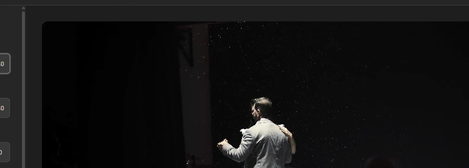

001 / WEDDINGAUTHOR'S FILM
01 / 02
Кирилл и Татьяна
Свадебный фильм · 3:39
Из мгновений, взглядов и звуков собираю
мини-фильмы, которые трогают глубоко.
Не хроника событий. Авторские истории, собранные из живых деталей.
Свадебный фильм · 3:39

Фильм о годовщине · 4:10
В каждом событии уже есть история. Важно разглядеть её.
Не пересказываю событие. Воссоздаю его историю.
Собираю историю по крупицам — и превращаю её в мини-фильм, который трогает до глубины души.
Внимательно работаю с композицией кадра, движением, паузами и ритмом. Мне близок выразительный киноязык Гая Ричи, но для каждого события я ищу свой почерк. Звук выстраиваю так же тщательно, как изображение: компрессия, эквализация и эффекты помогают передать вес каждого момента.
АВТОР И РЕЖИССЁР МОНТАЖА
Режиссёр монтажа / KLESHOVPROD
Во время монтажа иногда возникает странное ощущение: будто не я веду историю, а она сама направляет мои руки. Я просто следую её ритму.
Это состояние невозможно запланировать. Но ради него я снова и снова погружаюсь в материал — в поисках фильма, который в нём скрыт.
ДЛЯ АГЕНТСТВ И ЧАСТНЫХ КЛИЕНТОВ
Режиссура монтажа и авторские фильмы
в Москве, Санкт-Петербурге и по всей России.
Проекты от 150 000 ₽ · Производственные и выездные расходы — отдельно